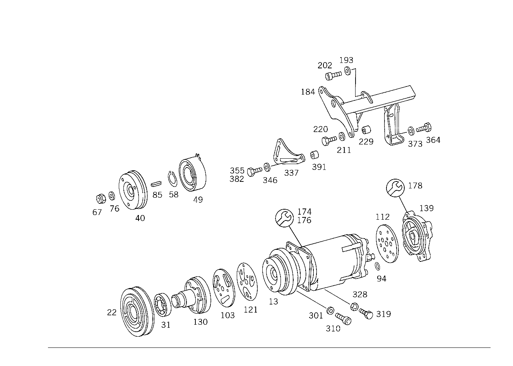

| № | Артикул | Название | Кол. | Примечание | Ограничение |
|---|---|---|---|---|---|
| 13 | A 003 131 25 01 | КОМПРЕССОР | - | Z 12.427/01, Z 12.427/02, Z 12.427/04 | |
| 13 | A 000 230 49 11 | КОМПРЕССОР (COMPRESSOR) | 1 | СО СЦЕПЛЕНИЕМ Z 12.427/01, Z 12.427/02, Z 12.427/04 | |
| 22 | A 000 132 31 08 | - Сцепление, механическое (COUPLING, MECHANICAL) | 1 | 5" Z 12.427/01, Z 12.427/02, Z 12.427/04 | |
| 31 | A 000 981 78 27 | - РАД.-УПОРН. ПОДШИПНИК | - | Z 12.427/01, Z 12.427/02, Z 12.427/04 | |
| 31 | A 000 981 87 27 | - Подшипник | 1 | Z 12.427/01, Z 12.427/02, Z 12.427/04 | |
| 40 | A 000 132 04 10 | - ПОВОДОК (CONNECTING DRUM) | 1 | Z 12.427/01, Z 12.427/02, Z 12.427/04 | |
| 49 | A 000 157 08 01 | - МАГНИТ. КАТУШКА | 1 | Z 12.427/01, Z 12.427/02, Z 12.427/04 | |
| 58 | A 002 994 19 41 | - ПРЕДОХРАНИТЕЛЬ (RETAINING RING) | 1 | Z 12.427/01, Z 12.427/02, Z 12.427/04 | |
| 67 | A 001 990 68 51 | - ГАЙКА | - | Z 12.427/01, Z 12.427/02, Z 12.427/04 | |
| 67 | A 002 990 80 51 | - ГАЙКА | 1 | Z 12.427/01, Z 12.427/02, Z 12.427/04 [402] БОЛЬШЕ НЕ ПОСТАВЛЯЕТСЯ | |
| 76 | A 000 132 01 76 | - ШАЙБА | - | Z 12.427/01, Z 12.427/02, Z 12.427/04 [005] БОЛЬШЕ НЕ ПОСТАВЛ., ДЛЯ ЭТОГО 002 990 80 51 | |
| 85 | A 000 993 05 07 | - ПРУЖИНА | 1 | Z 12.427/01, Z 12.427/02, Z 12.427/04 [402] БОЛЬШЕ НЕ ПОСТАВЛЯЕТСЯ | |
| 94 | A 010 997 34 45 | - Уплотнительное кольцо (SEALING RING) | 2 | Z 12.427/01, Z 12.427/02, Z 12.427/04 | |
| 103 | A 000 131 20 31 | - ПЛАСТИНА КЛАПАНА | 1 | СПЕРЕДИ Z 12.427/01, Z 12.427/02, Z 12.427/04 [402] БОЛЬШЕ НЕ ПОСТАВЛЯЕТСЯ | |
| 112 | A 000 131 21 31 | - ПЛАСТИНА КЛАПАНА | 1 | СЗАДИ Z 12.427/01, Z 12.427/02, Z 12.427/04 [402] БОЛЬШЕ НЕ ПОСТАВЛЯЕТСЯ | |
| 121 | A 000 131 23 04 | - КЛАПАН | 1 | ВСАСЫВ.СТОРОНА СПЕРЕДИ И СЗАДИ Z 12.427/01, Z 12.427/02, Z 12.427/04 | |
| 130 | A 000 130 11 19 | - ГОЛОВКА БЛОКА ЦИЛИНДРОВ | 1 | СПЕРЕДИ Z 12.427/01, Z 12.427/02, Z 12.427/04 [402] БОЛЬШЕ НЕ ПОСТАВЛЯЕТСЯ | |
| 139 | A 000 130 36 19 | - ГОЛОВКА БЛОКА ЦИЛИНДРОВ | 1 | СЗАДИ Z 12.427/01, Z 12.427/02, Z 12.427/04 [417] БОЛЬШЕ НЕ ПОСТАВЛЯЕТСЯ, ЗАКАЗЫВАТЬ КОМПЛЕКТ ПОСТАВКИ | |
| 148 | N 070614 010021 | - Винт (SCREW) | 1 | ТРУБОПРОВОД Z 12.427/01, Z 12.427/02, Z 12.427/04 | |
| 174 | A 000 586 14 13 | РЕМКОМПЛЕКТ (REPAIR KIT) | 1 | (КОМПЛЕКТ КОЛЕЦ SEEGER) Z 12.427/01, Z 12.427/02, Z 12.427/04 | |
| 176 | A 000 586 15 13 | РЕМКОМПЛЕКТ | 1 | СО СТОРОНЫ ПРИВОДА Z 12.427/01, Z 12.427/02, Z 12.427/04 | |
| 178 | A 000 586 16 13 | РЕМКОМПЛЕКТ (SEAL SET) | 1 | ПЛАСТИНА КЛАПАНА Z 12.427/01, Z 12.427/02, Z 12.427/04 | |
| 184 | A 117 130 03 35 | КРОНШТЕЙН | 1 | Z 12.427/01, Z 12.427/02, Z 12.427/04 [402] БОЛЬШЕ НЕ ПОСТАВЛЯЕТСЯ | |
| 193 | N 000125 010518 | Шайба | - | Z 12.427/01, Z 12.427/02, Z 12.427/04 | |
| 193 | N 000125 010532 | Шайба | 2 | КОМПРЕССОР ХЛАДАГЕНТА НА КРОНШТ. Z 12.427/01, Z 12.427/02, Z 12.427/04 | |
| 202 | N 000912 010064 | Винт | 2 | КОМПРЕССОР ХЛАДАГЕНТА НА КРОНШТ. Z 12.427/01, Z 12.427/02, Z 12.427/04 | |
| 211 | N 000125 008418 | Шайба | - | Z 12.427/01, Z 12.427/02, Z 12.427/04 | |
| 211 | N 000125 008443 | Шайба | 2 | КОМПРЕССОР ХЛАДАГЕНТА НА КРОНШТ.; 8 MM Z 12.427/01, Z 12.427/02, Z 12.427/04 | |
| 220 | N 000933 008131 | Винт | - | Z 12.427/01, Z 12.427/02, Z 12.427/04 | |
| 220 | N 304017 008016 | Винт с 6-гранной головкой (HEXAGON HEAD BOLT) | 2 | КОМПРЕССОР ХЛАДАГЕНТА НА КРОНШТ.; M8X16 Z 12.427/01, Z 12.427/02, Z 12.427/04 | |
| 229 | A 180 466 10 51 | ДИСТАНЦИОННОЕ КОЛЬЦО (SPACER RING) | 2 | ПО НЕОБХОДИМОСТИ 11,25 MM Z 12.427/01, Z 12.427/02, Z 12.427/04 | |
| 229 | A 180 466 09 51 | ДИСТАНЦИОННОЕ КОЛЬЦО | 2 | ПО НЕОБХОДИМОСТИ 11,5 MM Z 12.427/01, Z 12.427/02, Z 12.427/04 [402] БОЛЬШЕ НЕ ПОСТАВЛЯЕТСЯ | |
| 229 | A 180 466 08 51 | ДИСТАНЦИОННОЕ КОЛЬЦО | 2 | ПО НЕОБХОДИМОСТИ 11,75 MM Z 12.427/01, Z 12.427/02, Z 12.427/04 [402] БОЛЬШЕ НЕ ПОСТАВЛЯЕТСЯ | |
| 229 | A 180 466 07 51 | ДИСТАНЦИОННОЕ КОЛЬЦО (SPACER RING) | 2 | ПО НЕОБХОДИМОСТИ 12,0 MM Z 12.427/01, Z 12.427/02, Z 12.427/04 | |
| 229 | A 180 466 06 51 | ДИСТАНЦИОННОЕ КОЛЬЦО (SPACER RING) | 2 | ПО НЕОБХОДИМОСТИ 12,25 MM Z 12.427/01, Z 12.427/02, Z 12.427/04 | |
| 229 | A 180 466 01 51 | ДИСТАНЦИОННОЕ КОЛЬЦО (SPACER RING) | 2 | ПО НЕОБХОДИМОСТИ 12,5 MM Z 12.427/01, Z 12.427/02, Z 12.427/04 | |
| 229 | A 180 466 02 51 | ДИСТАНЦИОННОЕ КОЛЬЦО | 2 | ПО НЕОБХОДИМОСТИ 12,75 MM Z 12.427/01, Z 12.427/02, Z 12.427/04 | |
| 229 | A 180 466 03 51 | ДИСТАНЦИОННОЕ КОЛЬЦО | 2 | ПО НЕОБХОДИМОСТИ 13,0 MM Z 12.427/01, Z 12.427/02, Z 12.427/04 | |
| 229 | A 180 466 04 51 | ДИСТАНЦИОННОЕ КОЛЬЦО | - | Z 12.427/01, Z 12.427/02, Z 12.427/04 | |
| 229 | A 180 466 08 51 | ДИСТАНЦИОННОЕ КОЛЬЦО | 2 | ПО НЕОБХОДИМОСТИ 13,25 MM Z 12.427/01, Z 12.427/02, Z 12.427/04 [402] БОЛЬШЕ НЕ ПОСТАВЛЯЕТСЯ | |
| 229 | A 180 466 05 51 | ДИСТАНЦИОННОЕ КОЛЬЦО | 2 | ПО НЕОБХОДИМОСТИ 13,5 MM Z 12.427/01, Z 12.427/02, Z 12.427/04 | |
| 238 | A 117 130 00 60 | ШКИВ | - | Z 12.427/01, Z 12.427/02, Z 12.427/04 | |
| 238 | A 117 130 01 60 | Ременный шкив (BELT PULLEY) | 1 | НАТЯЖН. РОЛИК КОМПРЕССОРА ХЛАДАГ. Z 12.427/01, Z 12.427/02, Z 12.427/04, Z 12.427/05, Z 12.427/06 | |
| 247 | A 116 130 04 60 | - Ременный шкив (BELT PULLEY) | 1 | Z 12.427/01, Z 12.427/02, Z 12.427/04, Z 12.427/05, Z 12.427/06 | |
| 256 | A 115 990 02 19 | - болт (SCREW) | 1 | Z 12.427/01, Z 12.427/02, Z 12.427/04, Z 12.427/05, Z 12.427/06 | |
| 265 | A 115 132 00 53 | - Проставочная трубка (SPACER TUBE) | 1 | Z 12.427/01, Z 12.427/02, Z 12.427/04, Z 12.427/05, Z 12.427/06 | |
| 274 | N 912004 012100 | - Пружинное кольцо (SPRING LOCK WASHER) | 1 | Z 12.427/01, Z 12.427/02, Z 12.427/04 | |
| 283 | N 000961 012122 | - Винт | 1 | Z 12.427/01, Z 12.427/02, Z 12.427/04 | |
| 283 | N 000961 012097 | Винт | - | Z 12.427/01, Z 12.427/02, Z 12.427/04 | |
| 283 | N 308676 012026 | Винт с 6-гранной головкой | 1 | НАТЯЖН. БОЛТ НА КРОНШТЕЙНЕ Z 12.427/01, Z 12.427/02, Z 12.427/04 | |
| 285 | N 912004 012100 | Пружинное кольцо (SPRING LOCK WASHER) | 1 | НАТЯЖН. БОЛТ НА КРОНШТЕЙНЕ Z 12.427/01, Z 12.427/02, Z 12.427/04, Z 12.427/05, Z 12.427/06 | |
| 292 | A 006 997 63 92 | РЕМЕНЬ КЛИНОВОЙ (V-BELT) | 1 | 12,5 X 920 Z 12.427/01, Z 12.427/02 | |
| 301 | N 000125 008418 | Шайба | - | Z 12.427/01, Z 12.427/02, Z 12.427/04 | |
| 301 | N 000125 008443 | Шайба | 1 | КОМПРЕССОР ХЛАДАГЕНТ. НА БЛОКЕ ЦИЛ.; 8 MM Z 12.427/01, Z 12.427/02, Z 12.427/04 | |
| 301 | A 116 990 14 40 | ШАЙБА | 1 | КОМПРЕССОР ХЛАДАГЕНТ. НА БЛОКЕ ЦИЛ. Z 12.427/01, Z 12.427/02, Z 12.427/04 | |
| 310 | N 000912 008068 | Винт (SCREW) | 2 | КОМПРЕССОР ХЛАДАГЕНТА С КРОНШТ. НА КРЫШКЕ КАРТЕРА ГРМ Z 12.427/01, Z 12.427/02, Z 12.427/04 | |
| 319 | N 000933 008150 | Винт | - | Z 12.427/01, Z 12.427/02, Z 12.427/04 | |
| 319 | N 304017 008018 | Винт с 6-гранной головкой (HEXAGON HEAD BOLT) | 1 | КОМПРЕССОР ХЛАДАГЕНТ. НА БЛОКЕ ЦИЛ.; M8X35 Z 12.427/01, Z 12.427/02, Z 12.427/04 | |
| 328 | N 000934 008010 | Гайка | - | Z 12.427/01, Z 12.427/02, Z 12.427/04 | |
| 328 | N 304032 008006 | Шестигранная гайка (HEXAGON NUT) | 1 | КОМПРЕССОР ХЛАДАГЕНТ. НА БЛОКЕ ЦИЛ.; M8 Z 12.427/01, Z 12.427/02, Z 12.427/04 | |
| 337 | A 116 131 05 41 | ДЕРЖАТЕЛЬ | 1 | ДЕРЖ. НА КОМПРЕССОРЕ ХЛАДАГЕНТ. С КРОНШТ. Z 12.427/01, Z 12.427/02, Z 12.427/04 [402] БОЛЬШЕ НЕ ПОСТАВЛЯЕТСЯ | |
| 346 | N 000125 008418 | Шайба | - | Z 12.427/01, Z 12.427/02, Z 12.427/04 | |
| 346 | N 000125 008443 | Шайба | 2 | ДЕРЖ. НА КОМПРЕССОРЕ ХЛАДАГЕНТ. С КРОНШТ.; 8 MM Z 12.427/01, Z 12.427/02, Z 12.427/04 | |
| 355 | N 000933 008131 | Винт | - | Z 12.427/01, Z 12.427/02, Z 12.427/04 | |
| 355 | N 304017 008016 | Винт с 6-гранной головкой (HEXAGON HEAD BOLT) | 2 | ДЕРЖ. НА КОМПРЕССОРЕ ХЛАДАГЕНТ. С КРОНШТ.; M8X16 Z 12.427/01, Z 12.427/02, Z 12.427/04 | |
| 364 | N 304017 008021 | Винт с 6-гранной головкой (HEXAGON HEAD BOLT) | 1 | M8X20 Z 12.427/02 | |
| 373 | N 000125 008418 | Шайба | - | Z 12.427/01, Z 12.427/02, Z 12.427/04 | |
| 373 | N 000125 008443 | Шайба | 1 | КОМПРЕССОР ХЛАДАГЕН. С КРОНШТ. НА МАСЛ.КАРТЕРЕ; 8 MM Z 12.427/01, Z 12.427/02, Z 12.427/04 | |
| 382 | N 000931 008266 | Винт (SCREW) | 1 | КОМПРЕССОР ХЛАДАГЕН. С КРОНШТ. НА МАСЛ.КАРТЕРЕ Z 12.427/02 | |
| 391 | A 116 131 00 51 | ДИСТАНЦИОННОЕ КОЛЬЦО | 1 | КОМПРЕССОР ХЛАДАГЕН. С КРОНШТ. НА МАСЛ.КАРТЕРЕ Z 12.427/02 [402] БОЛЬШЕ НЕ ПОСТАВЛЯЕТСЯ | |
| 490 | A 117 130 04 57 | ВСАСЫВ. ТРУБКА | - | Z 12.427/02 | |
| 490 | A 117 130 08 57 | ВСАСЫВ. ТРУБКА | - | Z 12.427/02 | |
| 490 | A 000 130 03 57 | ВСАСЫВ. ТРУБКА (SUCTION LINE) | 1 | КОНДЕНСАТОР К КОМПРЕССОРУ Z 12.427/02 | |
| 499 | A 115 832 00 85 | - Золотник клапана (VALVE ELEMENT) | 1 | Z 12.427/02, Z 12.427/05, Z 12.427/06 | |
| 508 | A 123 832 00 33 | - КОЛПАЧОК | - | Z 12.427/01, Z 12.427/02, Z 12.427/04 | |
| 508 | A 201 988 06 35 | - Колпачок (CAP) | 1 | ОБЪЁМ ПОСТАВКИ Z 12.427/02, Z 12.427/05, Z 12.427/06 | |
| 517 | A 116 466 14 82 | - Резиновое кольцо (RUBBER RING) | 1 | TO 117 130 04 57 Z 12.427/02 | |
| 526 | A 123 997 04 40 | - УПЛОТНИТ. КОЛЬЦО | - | Z 12.427/01, Z 12.427/02, Z 12.427/04, Z 12.427/05, Z 12.427/06 | |
| 526 | A 124 997 05 45 | - УПЛОТНИТ. КОЛЬЦО | - | Z 12.427/01, Z 12.427/02, Z 12.427/04, Z 12.427/05, Z 12.427/06 [022] ИСПОЛЬЗ.СТАР.НОМЕР ДЕТ. ДО ВВЕДЕНИЯ ХЛАДАГЕНТА R 134 | |
| 526 | A 140 997 08 45 | - Уплотнительное кольцо (SEALING RING) | 1 | 14X2 MM Z 12.427/01, Z 12.427/02, Z 12.427/04, Z 12.427/05, Z 12.427/06 | |
| 580 | N 000912 008006 | Винт | - | Z 12.427/02 | |
| 580 | N 007984 008003 | Винт (SCREW) | 1 | ТРУБОПР.НА ГБЦ; M8X18 Z 12.427/02 | |
| 589 | N 000125 008418 | Шайба | - | Z 12.427/02 | |
| 589 | N 000125 008443 | Шайба | 1 | ТРУБОПР.НА ГБЦ; 8 MM Z 12.427/02 | |
| 598 | N 000912 008019 | Винт | - | Z 12.427/03 | |
| 598 | N 000912 008203 | Цилиндрич. винт (CAP SCREW) | 1 | ТРУБОПР.НА ГБЦ; M8X30\-10.9 Z 12.427/03 | |
| 607 | A 117 134 00 53 | РАСПОРН. ТРУБКА | 1 | ТРУБОПР.НА ГБЦ Z 12.427/03 [402] БОЛЬШЕ НЕ ПОСТАВЛЯЕТСЯ | |
| 715 | A 003 545 51 24 | ВЫКЛЮЧАТЕЛЬ АВТОМ. | - | Z 12.427/01, Z 12.427/02, Z 12.427/04 | |
| 715 | A 006 545 14 24 | Переключатель (SWITCH) | 1 | ВПУСК.ШТУЦЕР НАСОСА ОЖ,100 ГРАДУСОВ Z 12.427/01, Z 12.427/02, Z 12.427/04 | |
| 715 | A 006 545 39 24 | ВЫКЛЮЧАТЕЛЬ АВТОМ. | 1 | ВПУСК.ШТУЦЕР НАСОСА ОЖ,100 ГРАДУСОВ Z 12.427/01, Z 12.427/02, Z 12.427/04 | |
| N 000908 014008 | Резьбовая пробка (SCREW PLUG) | 1 | ВХОДНОЙ ПАТРУБОК Z 12.427/01, Z 12.427/02, Z 12.427/04, Z 12.427/05, Z 12.427/06 |
Позиций: 91 · подписано на схемах: 90 · колесо — плавный зум в курсор, перетаскивание — пан, двойной клик — зум, клик по артикулу — скопировать.